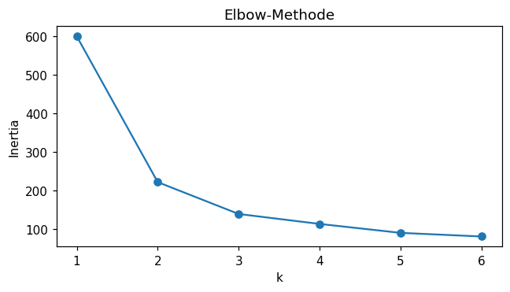
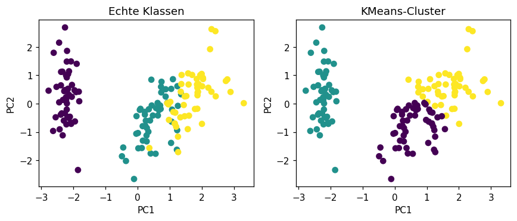

Selbst programmieren
Lies die Aufgabenstellung und vergleiche dein Ziel mit der „Erwarteten Ausgabe“.
Schreibe deine Lösung dann selbst im freien Code-Bereich,
der per Klick auf „▶ Code ausführen“ echtes Python (Pyodide, inkl. numpy/pandas/scikit-learn)
im Browser ausführt. Erst danach die Musterlösung aufklappen.
Alle Aufgaben arbeiten mit dem iris-Datensatz (150 Samples, 4 Features, 3 Klassen), standardisiert mit StandardScaler.
🔵 KMeans: Cluster-Größen & Inertia
LeichtClustere die standardisierten iris-Daten mit KMeans(n_clusters=3).
- Erstelle
KMeans(n_clusters=3, random_state=42, n_init=10)und fitte ihn aufXs. - Gib die Clustergrößen mit
np.bincount(labels)aus. - Gib
km.inertia_gerundet auf 2 Nachkommastellen aus.
Cluster sizes: [53 50 47] Inertia: 139.82
💡 Musterlösung anzeigen
fit_predict liefert für jeden Punkt ein Cluster-Label (0, 1 oder 2). Mit drei echten
Iris-Arten von je 50 Samples erkennt KMeans eine Klasse fast perfekt (50), die anderen beiden
überlappen sich leicht (53/47). Die inertia_ ist die Summe der quadrierten Abstände
aller Punkte zu ihrem Cluster-Zentrum — je kleiner, desto „kompakter“ die Cluster.
from sklearn.cluster import KMeans
km = KMeans(n_clusters=3, random_state=42, n_init=10)
labels = km.fit_predict(Xs)
print("Cluster sizes:", np.bincount(labels))
print("Inertia:", round(km.inertia_, 2))Cluster sizes: [53 50 47] Inertia: 139.82
📐 Elbow-Methode: das richtige k finden
MittelBerechne die inertia_ für verschiedene Werte von k, um den „Ellenbogen“ zu finden.
- Trainiere für
k in [1, 2, 3, 4, 5, 6]jeweils einKMeans(n_clusters=k, random_state=42, n_init=10)aufXs. - Gib für jedes
kdieinertia_mit 2 Nachkommastellen aus. - An welcher Stelle flacht die Kurve deutlich ab (Ellenbogen)?
k=1: inertia=600.00 k=2: inertia=222.36 k=3: inertia=139.82 k=4: inertia=114.09 k=5: inertia=90.93 k=6: inertia=81.54
💡 Musterlösung anzeigen
Die inertia_ sinkt mit wachsendem k immer (mehr Cluster = kompaktere Gruppen),
aber der Gewinn pro zusätzlichem Cluster nimmt ab. Der größte Sprung passiert von
k=1 auf k=2 (600 → 222) und von k=2 auf k=3
(222 → 140) — danach werden die Verbesserungen klein. Der „Ellenbogen“ liegt bei k=3,
was genau zur Anzahl der echten Iris-Arten passt.
from sklearn.cluster import KMeans
for k in [1, 2, 3, 4, 5, 6]:
km = KMeans(n_clusters=k, random_state=42, n_init=10)
km.fit(Xs)
print(f"k={k}: inertia={km.inertia_:.2f}")k=1: inertia=600.00 k=2: inertia=222.36 k=3: inertia=139.82 k=4: inertia=114.09 k=5: inertia=90.93 k=6: inertia=81.54
Im Plot zeigt sich der „Ellenbogen“ deutlich: zwischen k=1 und k=3
fällt die Kurve sehr steil ab, danach wird sie deutlich flacher. Der Punkt, an dem die Kurve
„abknickt“ (hier bei k=3), ist ein guter Kompromiss zwischen wenigen Clustern und
niedriger Inertia.
import matplotlib.pyplot as plt
ks = [1, 2, 3, 4, 5, 6]
inertias = []
for k in ks:
km = KMeans(n_clusters=k, random_state=42, n_init=10)
km.fit(Xs)
inertias.append(km.inertia_)
plt.plot(ks, inertias, marker='o')
plt.xlabel("k"); plt.ylabel("Inertia")
plt.title("Elbow-Methode")
plt.show()
🌊 DBSCAN: Cluster & Ausreißer finden
MittelWende DBSCAN auf die standardisierten iris-Daten an und identifiziere Cluster und Noise-Punkte.
- Erstelle
DBSCAN(eps=0.8, min_samples=5)und fitte ihn mitfit_predictaufXs. - Gib mit
np.unique(labels, return_counts=True)die Label-Häufigkeiten aus. - Gib die Anzahl der Cluster (ohne Noise, Label
-1) und die Anzahl der Noise-Punkte aus.
Labels: {-1: 4, 0: 49, 1: 97}
Anzahl Cluster (ohne Noise): 2
Noise-Punkte: 4
💡 Musterlösung anzeigen
DBSCAN braucht kein festes k — es bildet Cluster aus dicht beieinander
liegenden Punkten und markiert isolierte Punkte als Noise (Label -1). Mit
eps=0.8 findet DBSCAN hier nur 2 Cluster statt 3, weil zwei der drei
Iris-Arten (Versicolor/Virginica) im standardisierten Raum so dicht zusammenliegen, dass sie zu
einem Cluster verschmelzen. 4 Punkte sind zu isoliert und werden als Noise markiert.
from sklearn.cluster import DBSCAN
db = DBSCAN(eps=0.8, min_samples=5)
labels = db.fit_predict(Xs)
unique, counts = np.unique(labels, return_counts=True)
print("Labels:", dict(zip(unique, counts)))
print("Anzahl Cluster (ohne Noise):", len(set(labels)) - (1 if -1 in labels else 0))
print("Noise-Punkte:", np.sum(labels == -1))Labels: {-1: 4, 0: 49, 1: 97}
Anzahl Cluster (ohne Noise): 2
Noise-Punkte: 4
🚀 KMeans vs. echte Klassen (Adjusted Rand Index)
MittelVergleiche die von KMeans gefundenen Cluster mit den echten Iris-Klassen y.
- Trainiere wie in Aufgabe 1
KMeans(n_clusters=3, random_state=42, n_init=10)aufXs. - Importiere
adjusted_rand_scoreaussklearn.metrics. - Gib
adjusted_rand_score(y, labels)gerundet auf 3 Nachkommastellen aus.
Adjusted Rand Index: 0.62
💡 Musterlösung anzeigen
Clustering ist unüberwacht — KMeans kennt y nicht. Der
Adjusted Rand Index (ARI) vergleicht trotzdem im Nachhinein, wie gut die gefundenen
Cluster mit den echten Klassen übereinstimmen: 1.0 = perfekte Übereinstimmung, 0.0 = Zufallsniveau.
Ein Wert von 0.62 zeigt, dass KMeans die grobe Struktur (3 Gruppen) gut erkennt,
aber an den Grenzen zwischen den beiden ähnlichen Arten Fehler macht.
from sklearn.cluster import KMeans
from sklearn.metrics import adjusted_rand_score
km = KMeans(n_clusters=3, random_state=42, n_init=10)
labels = km.fit_predict(Xs)
print("Adjusted Rand Index:", round(adjusted_rand_score(y, labels), 3))Adjusted Rand Index: 0.62
🧭 PCA: Dimensionsreduktion auf 2D
SchwerReduziere die 4 Features von iris mit PCA auf 2 Hauptkomponenten.
- Erstelle
PCA(n_components=2)und wendefit_transformaufXsan. - Gib
explained_variance_ratio_(gerundet auf 3 Nachkommastellen) und deren Summe aus. - Gib die ersten 3 transformierten Punkte gerundet auf 3 Nachkommastellen aus.
Explained variance ratio: [0.73 0.229] Sum: 0.958 First 3 transformed points: [[-2.265 0.48 ] [-2.081 -0.674] [-2.364 -0.342]]
💡 Musterlösung anzeigen
Die erste Hauptkomponente (PC1) erfasst allein schon 73% der Gesamtvarianz der 4 Features, PC2 weitere 23% — zusammen 95.8%. Das bedeutet: man kann die 4-dimensionalen Iris-Daten fast verlustfrei in einem 2D-Streudiagramm darstellen, was für Visualisierung und auch für nachgeschaltetes Clustering sehr nützlich ist.
from sklearn.decomposition import PCA
pca = PCA(n_components=2)
X_pca = pca.fit_transform(Xs)
print("Explained variance ratio:", np.round(pca.explained_variance_ratio_, 3))
print("Sum:", round(pca.explained_variance_ratio_.sum(), 3))
print("First 3 transformed points:\n", np.round(X_pca[:3], 3))Explained variance ratio: [0.73 0.229] Sum: 0.958 First 3 transformed points: [[-2.265 0.48 ] [-2.081 -0.674] [-2.364 -0.342]]
🎨 PCA-Visualisierung: KMeans-Cluster vs. echte Klassen
MittelReduziere Xs mit PCA(n_components=2) auf 2D und vergleiche in zwei Scatterplots die echten Iris-Klassen mit den von KMeans gefundenen Clustern.
- Berechne
X_pca = PCA(n_components=2).fit_transform(Xs). - Trainiere wie in Aufgabe 4
KMeans(n_clusters=3, random_state=42, n_init=10)aufXsund holekm.labels_. - Erstelle zwei Subplots: links
X_pcaeinmal eingefärbt nachy(echte Klassen), rechts eingefärbt nachkm.labels_(KMeans-Cluster).
Zwei nebeneinander liegende Scatterplots in den PCA-Achsen PC1/PC2: links 3 Farbgruppen nach echten Iris-Arten, rechts 3 Farbgruppen nach KMeans-Clustern — beide sehen sehr ähnlich aus, mit leichten Abweichungen an den Cluster-Grenzen.

💡 Musterlösung anzeigen
Die beiden Plots sehen sich sehr ähnlich — das ist die visuelle Bestätigung des
Adjusted Rand Index von 0.62 aus Aufgabe 4: KMeans erkennt die grobe
3-Gruppen-Struktur der Daten gut (vor allem die linke, klar abgetrennte Gruppe = Setosa),
an der Grenze zwischen den beiden rechten, eng beieinander liegenden Gruppen
(Versicolor/Virginica) weicht die KMeans-Zuordnung aber leicht von den echten Klassen ab.
PCA dient hier nur der Visualisierung — geclustert wurde im
vollen 4D-Raum Xs.
from sklearn.decomposition import PCA
from sklearn.cluster import KMeans
import matplotlib.pyplot as plt
X_pca = PCA(n_components=2).fit_transform(Xs)
km = KMeans(n_clusters=3, random_state=42, n_init=10)
km.fit(Xs)
fig, axes = plt.subplots(1, 2, figsize=(8, 3.5))
axes[0].scatter(X_pca[:,0], X_pca[:,1], c=y, cmap='viridis')
axes[0].set_title("Echte Klassen")
axes[1].scatter(X_pca[:,0], X_pca[:,1], c=km.labels_, cmap='viridis')
axes[1].set_title("KMeans-Cluster")
for ax in axes:
ax.set_xlabel("PC1"); ax.set_ylabel("PC2")
plt.show()